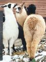
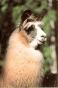
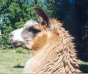

|
I waited until another llama owner showed up around 7:00
and then there were two of us. He went in the barn and I was able to go rescue
my boy. Had a nice long talk and I kept apologizing for sticking him in this
mess. Many people love doing shows, guess I am not cut out for this.
(Click on Photo to enlarge)
Beau at 18 months - Charlie is the llama
with the white chest facing you, Beau has the fanny shot with his head turned
around looking back at me. At this point I was starting to see some real
change. Today his fanny shot would take up much more of the screen.
(Click on Photo to enlarge)
Beau at 2 years - At two Beau is becoming my
young adult male. He has such a gentle nature and always reminds me of a wise
old owl. There is still another one to two years of growth for him. This photo
was taken just a month short of being two. It's funny though, when I look at
him now I still see MY Baby.
(Click on Photo to enlarge)
Beau at 3 1/2 years - At this point he
should be pretty much full grown, but he still could grow a bit over the next
few months. He is still an intact male but has never (like all the other boys)
been used at stud. I love his disposition and didn't want to mess up his life
with women:^)) He does however have a very studly presence.
That little bitty baby sure turned into one big boy.
Funny though because even when I look at him now I still see my baby, guess I
always will. His wonderful mellow disposition has never changed but he is very
dominate in the herd. |